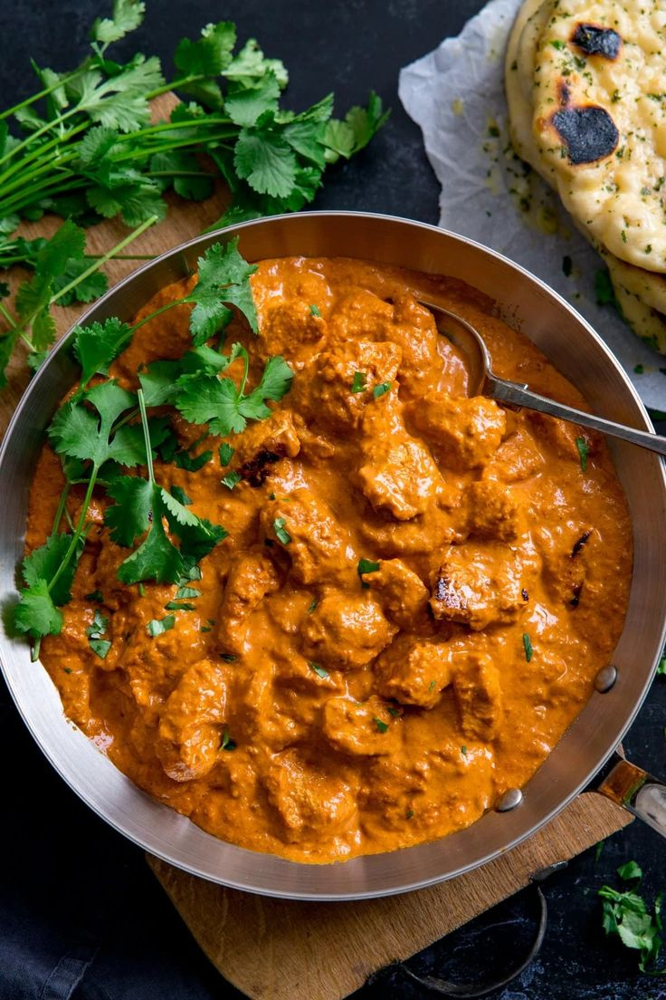
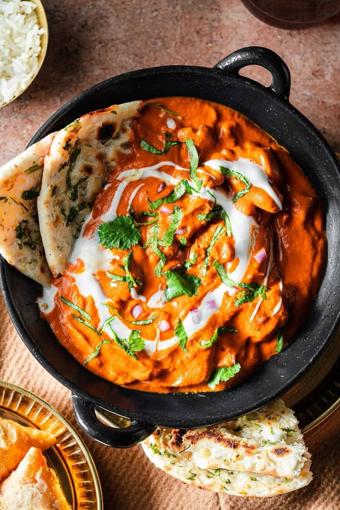

INGREDIENTS
For Marination:
- 250g boneless chicken (cut into cubes)
- 1/2 cup yogurt
- 1 tsp red chili powder
- 1/2 tsp turmeric powder
- 1/2 tsp garam masala
- 1/2 tsp salt
- 1 tbsp lemon juice
- 1 tsp ginger-garlic paste
For Gravy:
- 2 tbsp butter
- 1 tbsp oil
- 1 onion (finely chopped)
- 2 tomatoes (pureed)
- 6-8 cashews (soaked and blended into a paste)
- 1 tsp ginger-garlic paste
- 1/2 tsp turmeric powder
- 1 tsp red chili powder
- 1/2 tsp coriander powder
- 1/2 tsp garam masala
- 1/2 cup fresh cream
- 1/2 cup water
- Salt to taste
Recipe

- Marinate and Cook Chicken:
- -In a bowl, mix chicken with yogurt, red chili powder, turmeric, garam masala, salt, lemon juice, and ginger-garlic paste.
- -Let it marinate for at least 30 minutes.
- -Heat 1 tbsp oil in a pan, add the marinated chicken, and cook on medium heat until lightly browned. Remove and set aside.
- Prepare the Gravy:
- -In the same pan, heat butter and add chopped onions. Sauté until golden brown.
- -Add ginger-garlic paste and cook for a minute until fragrant.
- -Add tomato puree and cook for 5-7 minutes until oil separates.
- -Add cashew paste, turmeric, red chili powder, coriander powder, garam masala, and salt. Stir well.
- -Pour in water, let it simmer for 5 minutes, then blend for a smooth texture (optional).
- Combine and Serve:
- -Add the cooked chicken to the gravy and let it simmer for 5 minutes.
- -Stir in fresh cream and mix well. Cook for another 2 minutes.
- -Garnish with cream and serve with naan or basmati rice.